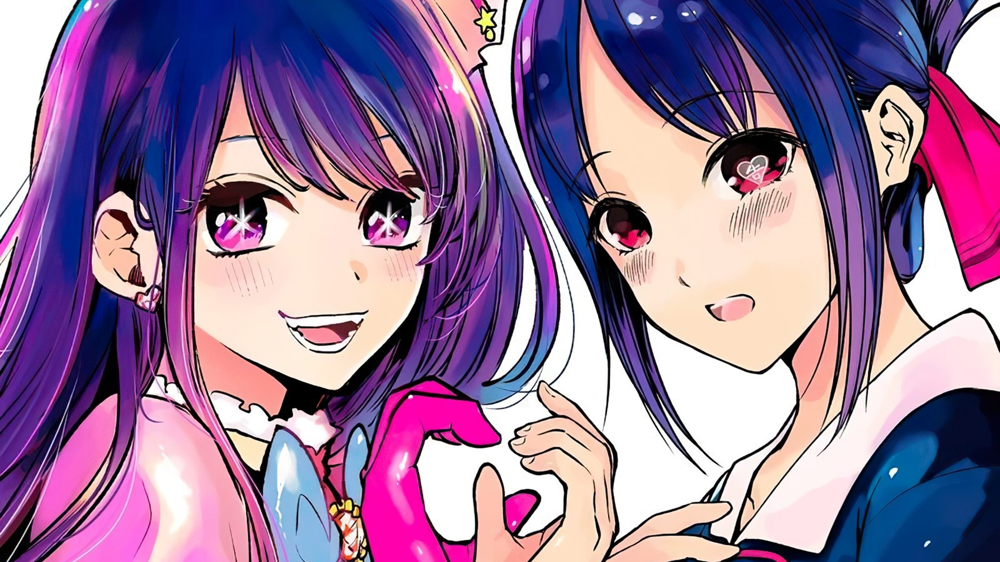
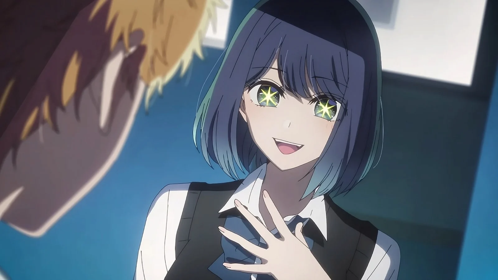
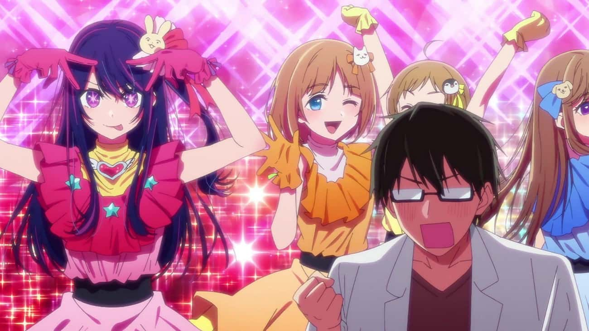
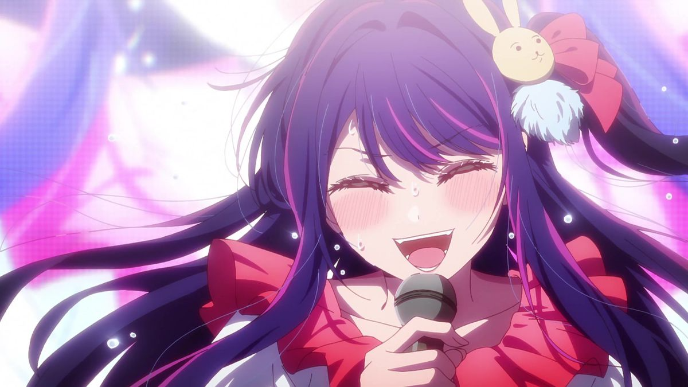

'Oshi no ko' and 'kaguya-sama:love is war' take place in the same Universe
In episode 3 of Oshi no Ko, Aqua Hoshino and Kana Arima star in a live-action adaptation of I'll Go With Sweet Today, a manga featured prominently in Kaguya-sama: Love Is War. The connections between the two series are even stronger in the manga. In a bonus chapter of Oshi No Ko, Ruby Hoshino is modeling for a photoshoot. On the final page, it’s revealed that the photographer was none other than Kaguya-sama's titular protagonist, Kaguya Shirogane. B-Komachi, the idol group Ai Hoshino was previously a member of, is referenced in Kaguya-sama: Love Is War as well. In one panel, Tsubame Koyasu sings one of B-Komachi’s songs.
Ai Hoshino Didn't Die In The Initial Version Of The Story

Although the story of Oshi no Ko revolves around the death of Ai Hoshino, series creator Aka Akasaka didn’t initially plan it that way. In a 2021 interview, Akasaka admitted the decision to have Ai killed came during the manga's serialization. In the original premise, Ai and her children, Aqua and Ruby, would be active in the entertainment industry. However, when he began writing the series, Akasaka realized Ai was too strong of a character. Out of fear that Ai’s shining presence would overshadow her kids - who were envisioned as the protagonists of the story - Akasaka made the decision to kill her off. There’s been speculation on how the series would have progressed if Ai wasn’t murdered by her stalker in front of her children. Some fans believe Aqua, with his past life experience as a doctor, could have saved his mother with his medical knowledge.
The Voice Actor For Ai Hoshino Wanted To Play Another Character

Japanese voice actress Rie Takahashi plays Ai Hoshino, the central character that sets off the chain of events in Oshi no Ko.
Given the immense popularity of the series, one would think Takahashi had her eyes set on playing the anime's heroine.
However, in interview with AniTrendz,
Takahashi revealed she had another character in mind.
In the interview, Takahashi explained the audition process that usually occurs with anime productions like Oshi no Ko.
In her first set of tape auditions, Takahashi was given the line “Lies are an outstanding kind of love.” This line stems from the
conversation between Ai and Dr. Gorou Amamiya in episode 1 of the anime. Takahashi submitted her audition tapes in the hopes of securing
the role of either Akane Kurokawa or Ai. Akane is the character Takahashi admires the most from the Oshi no Ko manga.
Although she didn’t nab the role of Akane, Takahashi won the role of Ai in the second round of auditions.
The meaning behind 'Ai Hoshino'

There is a deeper meaning to Ai Hoshino’s name that viewers might not realize at first glance.
Firstly, the name “Ai” could be interpreted in two different ways.
In katakana, “Ai” (アイ) means “eye”, possibly referring to the special stars embedded in her eyes.
However, when written in kanji (愛 or 藍), “Ai” could mean “love”, “affection”, or "indigo".
Her surname, “Hoshi”, means “star”. However, “no” (野) could be interpreted as "field" or "wild".
The pronunciation of “Hoshino” (ほしの) is similar to 欲しいの, which translates to “desire of”. When written together,
“Hoshino Ai” means “wild star eyes.” When pronounced together, Ai’s full name could also be read as “desires of love.”
'Chainsaw Man' Is Popular Even In The World Of 'Oshi No Ko'
The Anime Staff Were Already Fans Of The Manga

Ever wondered why the production quality of 'oshi no ko' is insanely good, well
in an interview with AniTrendz,
the creative team behind the anime adaptation shared their experience with the manga.
Ciao Nekatomi, Oshi no Ko's assistant director, said most of the people working on the anime had heard of the manga.
“Since the sales for it had been amazing, there weren’t a lot of people who didn’t know about it, or it seemed like that to me,” Nekatomi said.
She also explained why she found the “work narrative” of Oshi no Ko so appealing as a reader: "I really like manga about work narratives.
If you do this kind of work, effort is really necessary. So, when I feel like my heart is about to break,
reading manga like this where there are characters who engage in work with that kind of strong determination really encourages me.”
The Premiere of Oshi No Ko Was The Highest-Rated Anime Episode On MAL
For years, Fullmetal Alchemist: Brotherhood was the highest-rated anime series on MyAnimeList (MAL). That changed, albeit briefly, with the premiere of Oshi no Ko. After the release of the 90-minute first episode, Oshi no Ko was rated a 9.21/10 on MAL, beating the 9.10 score for Fullmetal Alchemist: Brotherhood.